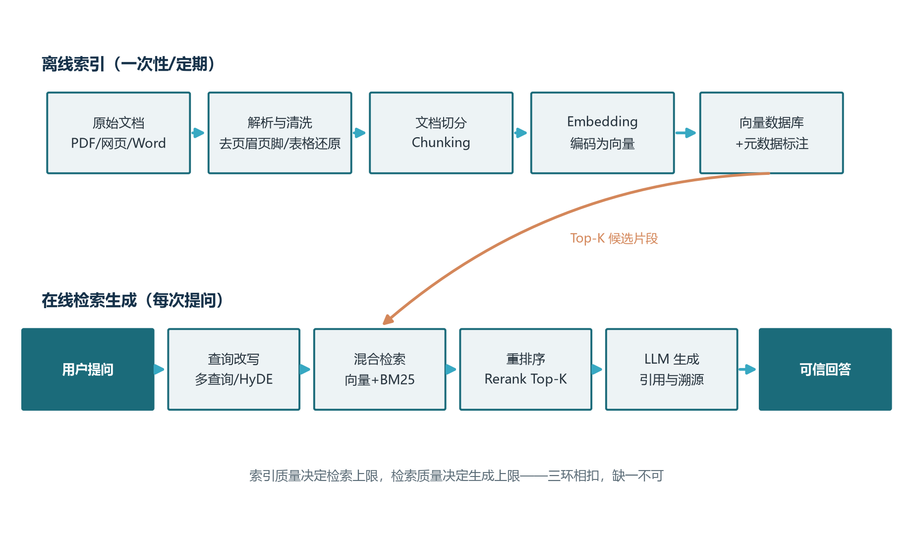
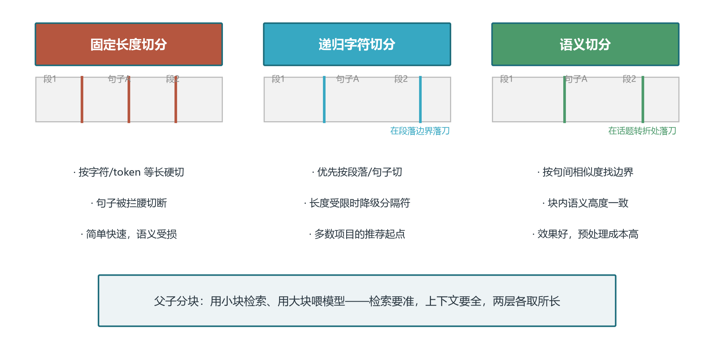
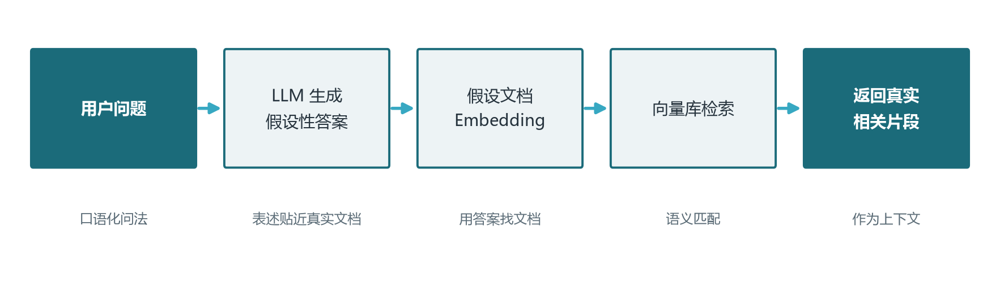
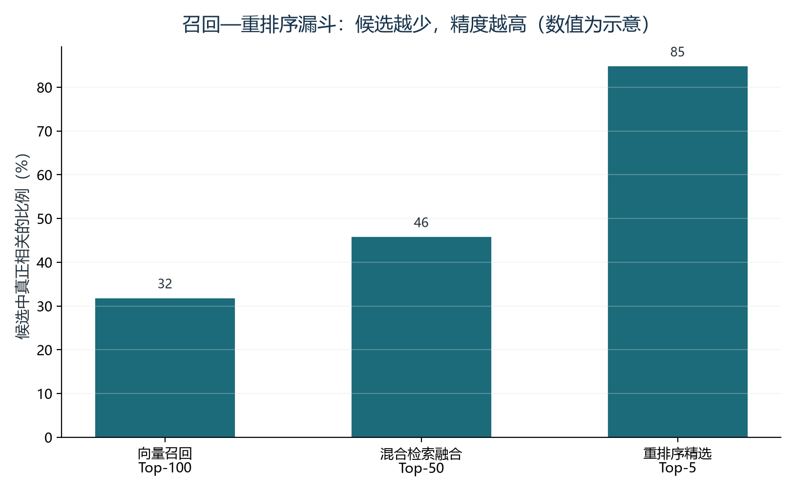
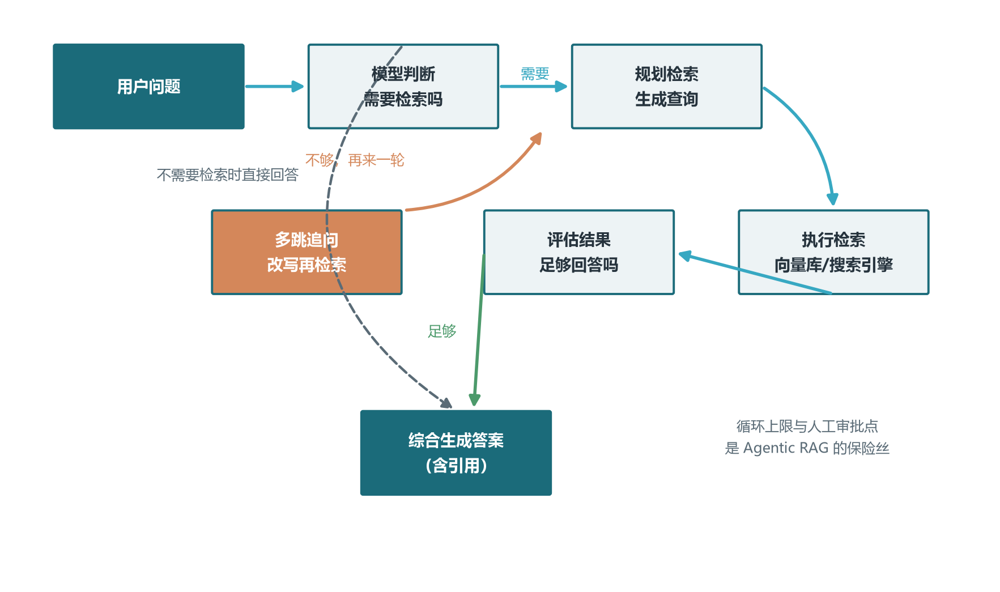
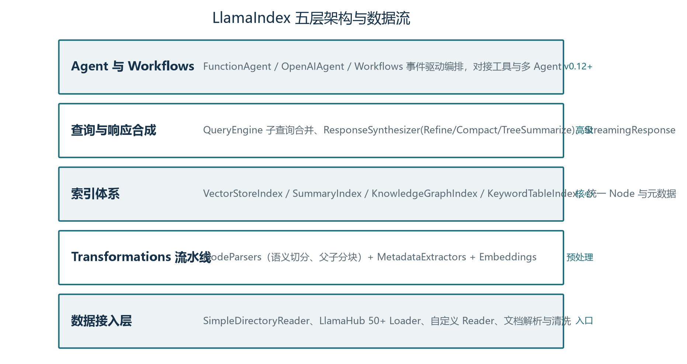

前言：给模型接上一个会更新的外脑
经过了卷七的学习，你已经能够把任务描述写成模型稳定执行的指令。但提示词工程有一个天花板：它只能驾驭模型参数里已有的知识。再精妙的提示词，也无法让一个训练截止于去年的模型知道上周发布的新政策，更无法让它回答只有你公司内部文档里才有的问题。模型像一个饱读诗书的学者，可惜毕业那天图书馆就关门了——此后的新书进不来，而馆里从来没收藏过的内部资料，他更是闻所未闻。本卷的主角 RAG（Retrieval-Augmented Generation，检索增强生成），就是给这位学者办一张可以随时进门的图书证：回答问题之前，先去书库里把相关资料翻出来摊在桌上，让他看着资料作答。
在整套手册的版图里，RAG 位于卷一图1-4 六层技术栈中的增强层，是这一层的第一根支柱，也是当前企业级大模型应用中落地最广、招聘需求最集中的技术形态。企业知识库问答、智能客服、法务合同检索、投研报告辅助、代码库问答——这些场景的共同特征是“答案存在于外部文档中，而不是模型参数里”。本卷按“索引、检索、生成”三大环节展开主干，再延伸到混合搜索、查询改写、重排序等进阶优化，最后抵达 Agentic RAG 与 GraphRAG 两类前沿范式，完整覆盖从朴素原型到生产系统的演进路径。
需要提前建立一个工程观念：RAG 的每个组件单看都不复杂——切分是字符串处理，检索是向量排序，生成是一次模型调用——它的难点在于组合与权衡。切分粒度影响召回，召回数量影响上下文质量，上下文排版影响生成忠实度，每一环都在为下一环设定天花板。所以学 RAG 不是背组件清单，而是建立“全链路归因”的思维方式：答案不对时，能定位问题出在哪一环。
学完本卷，你将能够：
- 说清模型知识“过时、私有、幻觉”三宗罪的成因，并向团队解释为什么这个场景该用 RAG 而不是微调；
- 独立搭建一个包含切分、嵌入、检索、生成四步的最小 RAG 系统，并知道每一步的质量陷阱在哪里；
- 掌握混合搜索、RRF 融合、查询改写、HyDE 与重排序五件检索优化武器，能把朴素 RAG 的准确率抬上一个台阶；
- 理解 Agentic RAG 与 GraphRAG 解决的是哪类传统 RAG 解决不了的问题，并能为一句话需求判断该用哪种范式。
向量与嵌入的原理已在卷03 讲解，本卷直接使用“文本可以编码为语义向量、距离近即语义近”这一结论；提示词的写法基础见卷07。本卷只对向量数据库做概览介绍，ANN 索引的内部机制与选型对比完整放在卷09；评估体系只做指标速览，完整方法论放在卷15——两处交界处都会明确标注，请按需回溯或预读。
关于动手环境再说一句：本卷的代码示例只需要一个嵌入模型接口、一个向量存储（哪怕是一个内存列表）和一个对话模型就能全部跑通，普通笔记本即可完成，不需要 GPU 集群。建议每读完一章就动手复现对应环节，并在每章末尾的练习中检验理解——RAG 是典型的“手感活”，纸上谈兵式地读完，与亲手调过一次切分参数的体感，差距非常大。
第一章 为什么需要 RAG：模型知识的三宗罪
1.1 过时、私有、幻觉：参数化记忆的先天缺陷
想象一个具体场景：你在企业内部部署了一个对话助手，员工问它“我们公司异地出差的住宿报销标准是多少”。它有三种可能的反应：要么回答“抱歉，我无法获取贵公司的内部信息”；要么根据互联网上流传的通行标准“编”一个貌似合理的数字；要么一本正经地引用一个根本不存在的《差旅管理制度》第几条。三种反应背后，是大语言模型知识体系的三个先天缺陷，我们称之为三宗罪：知识过时、私有知识缺失、幻觉。
第一宗罪是知识过时。模型的知识全部来自训练语料，而训练有截止日期：训练完成的那一刻，模型对世界的认知就冻结了。此后世界照常运转——产品改版、价格调整、法规修订、人事变动——模型却浑然不觉。你问它某款软件的最新版本特性，它可能还在热情地介绍两年前就被下线的功能。对新闻、行情、政策这类强时效领域，过时的知识比没有知识更危险，因为它带着流利的自信。
第二宗罪是私有知识缺失。你的 ERP 数据、合同文本、工单记录、内部规范，从来就不在公开语料里，任何模型都不可能“知道”。这不是模型不够聪明，而是这些知识从未进入它的参数。事实上，企业落地大模型时最值钱的那部分知识——真正构成业务壁垒的文档与数据——恰恰全部属于这一类。通用能力可以买，私有知识必须自己建管道，这就是 RAG 存在的根本理由。
第三宗罪是幻觉。卷二讲过，语言模型的本质是按概率续写文本，它的“知识”是有损压缩在千亿参数里的统计记忆，而不是可以精确查询的数据库。当被问到记忆模糊的细节时，它不会留白，而是顺着上下文的“语感”补全出一个看起来最像答案的文本——日期、编号、法条、引用都可能被凭空捏造，且语气与真话毫无二致。幻觉的危害在专业领域被急剧放大：客服机器人编造一个不存在的退款承诺，可能构成对用户的实际许诺；合规助手写错一个法条编号，可能让一份报告整体作废。更麻烦的是它的隐蔽性——错误的答案与正确的答案在文风、流畅度、自信程度上完全一致，非领域专家根本无从分辨。
三宗罪往往联手作案。你问一个涉及新政策的问题，模型同时犯下前两宗罪（不知道新政策，也不该知道），而它绝不会坦然承认无知，于是第三宗罪随即补位——用旧知识的语料质感，拼装出一个似是而非的回答。这就是为什么把大模型直接用于知识型任务，等价于让一个知识停留在过去、且从不说“我不知道”的员工独立接待客户。三宗罪的共同根源是同一个：参数化记忆本质上不是知识库，它不可查询、不可更新、不可溯源。只要这三点不满足，模型直接面向知识型任务就注定先天不足。
1.2 RAG 的核心思想：把闭卷考试改成开卷考试
2020 年，Meta 的 Lewis 等人在论文中首次提出 RAG 框架，给出的药方朴素而深刻：既然模型“背书”不可靠，那就别让它闭卷考试——回答之前，先从外部知识库检索出与问题最相关的文档片段，把这些片段连同问题一起放进提示词，让模型“看着资料作答”。用公式概括就是 RAG = Retriever（检索器）+ Generator（生成器）：检索器负责找到资料，生成器负责组织答案。知识从此从参数里搬到了外部库中，参数只保留语言能力与推理能力。
这个转变的价值是全方位的。知识更新不再需要重新训练——往知识库里补一份新文档，模型立刻就能引用它；答案可以溯源——每句话都能标注出自哪份文档哪一页，用户可以核验；幻觉被显著抑制——上下文里白纸黑字的资料，给了模型“照着说”的锚点；私有数据可以完全留在自己的向量库里，不必进入任何模型的训练集。开卷考试考的不再是背功，而是翻书的速度和挑选答案的眼力——RAG 的工程重心，恰恰就是把“翻书”和“挑选”做到极致。

图1-1 给出了 RAG 的完整链路，请注意它由两条通道组成。上方是离线索引通道，一次性或定期执行：原始文档经过解析清洗、切分、嵌入编码，最终以向量加元数据的形式存入向量库。下方是在线检索生成通道，每次提问都要走一遍：用户问题经过改写后发起混合检索，从向量库召回候选片段，重排序精选出最相关的少数几个，拼进提示词交给模型生成，最后输出带引用的回答。两条通道在向量库交汇——离线通道决定库里“有什么、好不好找”，在线通道决定“找得准不准、答得实不实”。
两条通道合起来不过五六十行代码，就可以搭出一个能用的最小系统。下面这段代码省去了框架依赖，用最朴素的方式实现了“切分、嵌入、检索、生成”的完整闭环，适合建立直觉：
from openai import OpenAI
import numpy as np
client = OpenAI()
def embed(texts: list[str]) -> np.ndarray:
"""把一批文本编码为归一化向量"""
resp = client.embeddings.create(
model="text-embedding-3-small", input=texts)
vecs = [np.array(d.embedding) for d in resp.data]
vecs = np.array(vecs)
return vecs / np.linalg.norm(vecs, axis=1, keepdims=True)
def build_index(docs: list[str], chunk_size: int = 300):
"""离线索引：定长切分并编码（生产中应换用递归切分）"""
chunks = []
for doc in docs:
for i in range(0, len(doc), chunk_size):
chunks.append(doc[i:i + chunk_size])
return chunks, embed(chunks)
def retrieve(query: str, chunks, chunk_vecs, k: int = 3):
"""在线检索：余弦相似度取 Top-K"""
q = embed([query])[0]
scores = chunk_vecs @ q
top = np.argsort(scores)[::-1][:k]
return [(chunks[i], float(scores[i])) for i in top]
def answer(question: str, chunks, chunk_vecs) -> str:
hits = retrieve(question, chunks, chunk_vecs)
context = "\n\n".join(
f"[资料{i+1}] {t}" for i, (t, _) in enumerate(hits))
prompt = (f"请仅依据以下资料回答问题，"
f"资料中没有的信息不要编造。\n\n{context}\n\n"
f"问题：{question}")
resp = client.chat.completions.create(
model="gpt-4.1-mini",
messages=[{"role": "user", "content": prompt}])
return resp.choices[0].message.content走读这段代码，四步结构一目了然：build_index 对应离线通道的后三步（解析被省略，切分用了最粗糙的定长硬切）；retrieve 用点积计算余弦相似度（向量已归一化，点积即余弦）取前三名；answer 把检索结果编号拼装进提示词，并明确告诉模型“资料中没有的不要编”。它已经能应付简单的文档问答，但离生产还有明显距离：定长切分会拦腰斩断句子、单路向量检索召回有限、没有重排序、没有拒答策略、没有引用管理。这些缺口恰好对应后面各章的主题——可以说，本卷的其余部分，就是把这段骨架逐行升级为可靠系统的过程。
大模型的参数记忆像人的博闻强识，广博却不可靠；外部知识库像笔记与档案，平凡却可核对。RAG 的本质，是让系统的知识建立在档案上，而只把博闻强识当作组织答案的口才。
—— 系列编者
1.3 RAG 与微调：互补而非互斥
“既然模型在我们领域表现不好，为什么不直接用内部数据微调一个专属模型？”这是 RAG 项目评审会上最常出现的问题。答案取决于你想改变模型的什么。微调改变的是模型参数，适合塑造行为：让输出符合特定格式、语气、术语习惯，教会模型某个领域的表达范式；RAG 改变的是模型可见的信息，适合注入知识：事实、数据、文档内容。知识会过期而行为相对稳定，所以频繁变化的事实性内容天然属于 RAG，稳定的风格与格式需求才属于微调。
| 对比维度 | RAG 检索增强 | 微调 Fine-Tuning |
|---|---|---|
| 知识更新 | 更新外部知识库即可，实时生效 | 需要重新训练模型，周期以天计 |
| 实施成本 | 低，主要是索引与检索成本 | 高，需要 GPU 训练资源与标注数据 |
| 可解释性 | 答案可追溯到具体来源文档 | 模型黑盒，难以解释依据 |
| 幻觉控制 | 上下文约束明显降低幻觉 | 依赖训练数据质量，仍可能幻觉 |
| 知识容量 | 理论上可无限扩展 | 受模型参数容量限制 |
| 数据隐私 | 数据保留在自有向量库 | 训练数据可能被模型记忆 |
| 擅长改变 | 注入事实与知识 | 塑造风格、格式与领域习惯 |
逐行看这张表可以发现，两条路线几乎没有正面冲突：RAG 赢在知识的动态性、可扩展性与可溯源性，微调赢在行为定制的深度。实践中二者常常是组合关系——例如金融客服系统，用 RAG 实时检索最新的产品条款与市场数据，同时用轻量微调让回答带着专业客户经理的语气与用词习惯。判断的实用法则：如果这项需求明天就要更新，用 RAG；如果这项需求一年不变且写不进提示词，考虑微调；拿不准时先做 RAG，因为它见效快、可回滚、好评估。
“微调能让模型学会我的私有知识”是一种危险的半真相。微调确实能把事实“压”进参数，但容量有限、容易过拟合、无法溯源，且每次知识更新都要重训。把微调当知识库用，得到的是一个更新昂贵、偶尔串味的黑盒；把 RAG 当知识层、微调当行为层，职责才清晰。
1.4 五阶段演进：从朴素流水线到智能检索体
自 2020 年诞生以来，RAG 经历了快速的范式演进。理解这条演进路线非常值钱：它不是技术编年史，而是五份“问题诊断书”——每个阶段都是对上一阶段失败模式的回应。掌握演进逻辑，你就能面对新需求时迅速判断自己需要哪个阶段的形态，避免拿着大炮打蚊子，或者用玩具应对生产。
- Naive RAG（2020 年）：最朴素的三段式——检索、拼接、生成，也就是 1.2 节那段骨架代码的形态。它证明了范式的可行性，但检索精度低、上下文碎片化，糟糕的输入质量常常让模型“看了资料也答错”。
- Advanced RAG（2023 至 2024 年）：围绕“检索质量”在链路上加装优化环节——检索前做查询改写、多查询扩展与 HyDE；检索中用向量加关键词的混合搜索与多路召回；检索后用重排序与上下文压缩精选喂给模型的材料。这些手段共同把问答准确率从约六成抬升到八成以上，是当前生产系统的主流基线，也是本卷第三、四章的主体内容。
- Modular RAG（2024 至 2025 年）：把系统拆解为索引、检索前、检索、检索后、记忆、生成、编排等模块，每个模块内含多种可插拔的算子，像乐高一样按需组合，从而支持迭代检索、自适应检索、多源融合等高级玩法。它是一种架构思想：组件标准化之后，Advanced RAG 的各种技巧只是标准插槽上的可选件。
- GraphRAG（2024 年）：微软研究院提出，在索引阶段用大模型抽取实体与关系构建知识图谱，再通过社区检测生成层次化摘要，使系统能回答“这批文档的主要主题是什么”这类需要跨文档综合的全局性问题——传统向量检索对此类问题几乎无解，细节见第五章。
- Agentic RAG（2025 年至今）：把检索的控制权交给模型，由它自主决定是否检索、检索什么、检索几轮、如何整合，并在证据不足时自我纠错。Search-R1、ReSearch 与 OpenAI Deep Research 是代表，RAG 从“信息检索工具”升级为“具备研究能力的智能体”，同样见第五章。
五个阶段是叠加关系而非替代关系：Agentic RAG 内部跑的仍是混合检索与重排序，GraphRAG 的局部查询也依赖向量检索。一个健康的演进策略是：从 Naive 理解本质，以 Advanced 组件打底，架构上按 Modular 思想留好插槽，再根据业务中真实出现的“答不了”问题类型，决定是否引入 GraphRAG 或 Agentic RAG。跳过基础直接上前沿范式的团队，往往连“答错了该归因于哪一环”都说不清，优化也就无从下手。
第二章 索引：一切从切分开始
2.1 文档解析：被低估的第一道工序
索引阶段的第一步是把原始文档变成干净的文本，而这恰恰是 RAG 系统中最容易被轻视、又最常成为准确率瓶颈的环节。道理朴素：垃圾进，垃圾出——解析环节丢失或扭曲的信息，检索与生成永远无法找回。很多团队调试 RAG 时一头扎进检索参数与提示词模板，折腾数周收效甚微，最后发现问题出在三年前的 PDF 解析脚本上：表格早已被拆成一行行乱码，页眉页脚的密文混进了正文。
典型的解析陷阱有一个家族。PDF 双栏排版被按行抽取后，左右两栏的句子交错拼接，读起来前言不搭后语；表格被扁平化成一串碎行，“金额”与“数字”天各一方，语义荡然无存；扫描件未经 OCR 处理，抽出来是空字符串或乱码；页眉页脚、水印、目录、免责声明这些重复噪声混入每个片段，既污染语义又浪费上下文预算；图表里的关键信息（一张折线图的趋势结论）则完全游离在文本之外。
- 优先取源头：能拿到 Markdown、HTML、Word 等结构化源文档时，绝不从 PDF 反向解析；
- 专业解析器处理 PDF：选用能识别版面结构的解析工具，重点验证表格还原质量；
- 噪声显式剔除：页眉页脚、导航、水印用规则统一清除，而非指望模型“忽略它们”；
- 抽查机制常态化：定期人工抽样比对解析结果与原文档，把解析质量纳入监控。
一条实用建议：给解析环节建立“质量抽查清单”，每次接入新文档类型时，人工核对十个片段的解析结果——表格有没有散架、句子有没有串栏、噪声有没有清干净。这十分钟的检查，往往能省下后面几周的无效调参。解析没有银弹，只有对每一类文档源的认真对待。
还要考虑索引的“保鲜”问题。企业文档每天都在流动：制度修订、条款更新、公告下发。索引管道应当设计为增量式的——用来源标识与内容哈希识别变更，新文档走同样的清洗、切分、嵌入流程入库，旧版本按标识替换或下线，而不是每次全量重建。同时保留文档版本信息（生效日期、是否现行有效），让过时内容可以被过滤而非误引。一个上线三个月后答案开始“过期”的 RAG 系统，问题多半不在算法，而在没有一条持续运转的数据流水线。
2.2 切分策略：决定检索质量的隐形之手
文档清洗之后要做切分（Chunking）：把长文档切成适合检索与注入的片段。切分为什么如此重要？因为嵌入模型编码的是整个片段的语义——片段被切碎，语义就不完整，嵌入向量无法代表任何完整的含义；片段切得太大，关键信息被大量无关内容稀释，向量变得“什么都有点像”，召回精度随之下降。切分是在“语义完整性”与“向量区分度”之间走钢丝。NVIDIA 在 2024 年的基准研究中测得，不同切分策略之间的召回率差距可达九个百分点——在别的环节苦熬几周都未必拿得到的提升，选对切分策略一步就能拿到。

2.2.1 固定长度切分与递归字符切分
固定长度切分是所有人都会写的第一版：按固定字符数或 token 数等长切割，相邻片段间保留一定的重叠（overlap，通常为片段长度的百分之十到二十），避免关键信息恰好骑在边界上被一切两半。它的优点是简单、快速、可预测，适合快速原型；缺点是完全没有语义概念，句子和段落随时可能被拦腰斩断，如图2-1 左栏所示——三刀切下去，两段完整的话都成了残句。
递归字符切分是它的进化版，也是大多数项目的推荐起点。核心思想是按分隔符优先级逐级降级：先尝试在段落（连续换行）处切，切出来仍然超长，就在句子（句号、换行）处切，还超长就在词或字符处切。这样在满足长度约束的前提下，尽可能把落刀位置让给文本的自然边界。LangChain 的 RecursiveCharacterTextSplitter 是这一策略的代表实现，绝大多数 RAG 项目从它开始就够用了。
2.2.2 语义切分与按结构切分
语义切分进一步让“落刀位置”服从语义：先用嵌入模型计算相邻句子的向量相似度，相似度骤降的位置就是话题转换的边界，在此处切分。这样每个片段内部语义高度一致，理论上能取得最高的召回质量。代价是切分阶段就要对全文做嵌入计算，预处理成本显著升高，且阈值需要调试。对语料更新不频繁、追求质量上限的知识库，语义切分值得一试；对文档高速流入的实时管道，成本需要掂量。
按结构切分则完全不看统计量，直接利用文档自带的格式信息：Markdown 按标题层级切，PDF 按章节切，代码按函数与类切，HTML 按标签结构切。它是防止“表格被切断、代码块被拆散”的最可靠手段，因为结构信息就是天然的语义边界。实践中最好的做法是把结构感知与其他策略组合：先按标题切出大块，再在块内做递归切分，同时把标题路径写入元数据——这正是下一小节父子分块的雏形。
2.2.3 父子分块：检索用小的，生成用大的
检索与生成对片段的要求其实是矛盾的：检索喜欢小片段——短文本语义集中，向量区分度高，容易精准命中；生成喜欢大片段——上下文完整，模型不需要脑补。父子分块（Parent-Child Chunking，又称层次切分）优雅地化解了这个矛盾：把同一文档切出两到三层粒度，例如子块 128 token、父块 512 token、祖父块 2048 token。检索时用最小的子块做相似度匹配，命中后顺着映射关系取出对应的父块，作为上下文交给模型。用小块找到的，用大块来回答——检索的准与上下文的全，两个都要。
| 策略 | 核心机制 | 优点 | 代价与适用场景 |
|---|---|---|---|
| 固定长度切分 | 按字符或 token 等长硬切加重叠 | 简单快速可预测 | 语义被切断，仅适合原型验证 |
| 递归字符切分 | 按分隔符优先级逐级降级落刀 | 兼顾长度约束与自然边界 | 边界仍可能不理想，多数项目首选 |
| 语义切分 | 按相邻句嵌入相似度骤降处切分 | 块内语义一致，召回质量上限高 | 嵌入计算成本高，需调阈值 |
| 父子分块 | 小块检索命中后取对应父块注入 | 检索精度与上下文完整性兼得 | 需维护层级映射，存储翻倍 |
2.3 块大小的权衡：没有最优值，只有匹配值
切分策略选定后，块大小（chunk size）是必须拍板的第一个参数。经验法则可以给起点：事实查找类问题（“退款期限是多少天”）的答案通常集中在一两句话里，256 到 512 token 足够；分析综合类问题（“这个方案的优缺点是什么”）需要完整的论证结构，1024 token 以上才装得下。NVIDIA 的测试显示 512 token 左右是多数场景下稳健的默认起点。
但请务必理解数字背后的机理，而不是记住数字本身。块越大，单个向量承载的语义越杂，检索区分度越低，同时上下文预算能装下的片段数越少；块越小，检索越精准，但答案所需的上下文可能散落多处，模型需要自行拼图。更重要的是，最优块大小与你的嵌入模型、文档类型、问题分布全都耦合。正确的定参方式不是抄别人的配置，而是准备二三十道覆盖典型问法的评估题，两三个候选块大小各跑一遍，用命中率数据说话——这个评估集在第三章调检索参数时还要反复使用，值得一开始就认真建好。
2.4 元数据标注：给每个片段发一张身份证
切分得到的片段不该是裸文本。入库时为每个片段挂上一组元数据（metadata），它像身份证一样伴随片段的一生。常见字段包括：来源文档标识与文件名、文档标题与章节路径、页码或位置索引、文档类型与业务标签、创建与更新时间、密级或权限范围。这些字段在三个环节持续发挥价值。
检索环节，元数据支持过滤：用户问“去年的报销制度”时，先用时间字段滤掉旧版本文档再相似度检索，避免过时内容抢占名额；企业场景中按部门与密级过滤，是实现权限隔离的第一道闸。生成环节，元数据支撑溯源：回答里的每条引用能回指到文档名与页码，用户才敢相信。运维环节，元数据支撑治理：文档更新时按来源标识定位并替换旧片段，知识库的增量更新与回滚都靠它。省略元数据的 RAG 系统，上线后几乎必然在“知识陈旧”与“越权泄露”上栽跟头。
2.5 嵌入与向量存储概览：深入内容留待卷09
索引链路的最后两步是把片段编码为向量并存入向量库。嵌入模型是 RAG 的“感官系统”，选型时核心看五点：中文（或你的业务语言）检索效果、向量维度（决定存储与计算成本）、最大上下文长度（决定它能不能一次编码你的整个片段）、部署方式（本地开源还是云 API）、以及是否支持混合检索所需的稀疏向量。中文场景中，智源的 BGE 系列与阿里的 GTE 系列是开源阵营的主力——例如 BGE-M3 支持 8192 token 长输入与一百多种语言，还能同时输出稠密与稀疏两种向量；闭源阵营则以 OpenAI 的 text-embedding-3 系列为代表。两个容易踩的细节：许多模型对查询与文档要求不同的前缀（如 BGE 系列的 query 与 passage 前缀），用错前缀会实打实损失精度；向量入库前应做 L2 归一化，让点积与余弦等价、分数可比。
向量库负责持久化这些向量并支持毫秒级相似度检索，从嵌入式的 Chroma、pgvector，到分布式的 Qdrant、Weaviate、Milvus，各有鲜明的定位。本卷不展开——卷09 将以整卷篇幅讲解 ANN 索引原理（HNSW、IVF 的内部机制）与主流向量数据库的选型对比。你此刻只需记住分工：嵌入模型决定“语义被表达得多好”，向量库决定“相似度找得多快”，前者影响质量上限，后者影响规模与延迟。
第三章 检索：召回的艺术
3.1 相似性搜索与 ANN：从完美到可用的妥协
检索环节的形式化定义很简单：给定查询向量，从海量文档向量中找出距离最小的 k 个。最诚实的做法是暴力扫描——查询与库里每一个向量都算一次距离，结果绝对精确，但复杂度随库容线性增长，百万级以上就慢得不可接受。近似最近邻（ANN）算法应运而生：在索引构建阶段预先组织向量空间，查询时以牺牲少量召回率（通常百分之九十五以上）换取几个数量级的速度提升。
两大主流家族各有一句好记的比喻。HNSW 像城市导航系统：构建多层稀疏不一的图，查询从顶层“高速公路”快速逼近目标区域，再逐层下降到“乡道”精确定位，毫秒级返回，代价是索引常驻内存。IVF 则像图书馆排架：先用聚类把向量空间分成若干“楼层”，查询时只进最相似的几个楼层翻找，省时间但可能漏掉恰好被分去别的楼层的书，参数 nprobe 控制“进几个楼层”，是召回与延迟之间的旋钮。这些参数的调优方法与两家算法的完整对比放在卷09，本章你只需建立直觉：ANN 不是黑魔法，而是用“几乎都对”换“快得可用”的工程妥协。
3.2 混合搜索：向量与关键词的双保险
向量检索擅长语义，却有清晰的盲区：精确记号。用户查“产品编号 A-1007 的保修期”，文档里白纸黑字写着 A-1007，但这个编号的嵌入向量与问题向量未必接近——嵌入模型把文本映射到语义空间，而编号恰恰是语义最稀薄的文本。罕见术语、型号、人名缩写、错误代码，全是向量检索的滑铁卢。反过来，传统关键词检索（以 BM25 为代表）在精确匹配上快准狠，却完全不理解同义词与改写：用户问“怎么注销账号”，文档写的是“用户主体注销流程”，关键词对不上就一无所获。
混合搜索（Hybrid Search）的思路是双通道并行：向量通道负责语义泛化，关键词通道负责精确锁定，两路各召回一批候选，再用融合算法合并成一个统一排名。融合最常用的是 RRF（Reciprocal Rank Fusion，倒数排名融合），它有一个聪明的简化：不看两路各自的分数，只看排名。每篇文档的融合得分为它在各通道排名倒数的求和，公式为 score = Σ 1/(k + rank)，常数 k 通常取 60。分数归一化的难题——向量余弦分数与 BM25 分数量纲完全不同，直接加权如同把身高和体重相加——被“只用排名”这一手漂亮地绕开了。
def rrf_fuse(rankings: list[list[str]], k: int = 60) -> list[str]:
"""倒数排名融合：rankings 是各通道的文档 ID 列表（按名次排序）"""
scores: dict[str, float] = {}
for ranking in rankings:
for rank, doc_id in enumerate(ranking, start=1):
scores[doc_id] = scores.get(doc_id, 0.0) + 1.0 / (k + rank)
# 按融合得分从高到低返回文档 ID
return [d for d, _ in sorted(scores.items(),
key=lambda x: x[1], reverse=True)]
# 向量通道与关键词通道各查一批，融合后取前若干条
fused = rrf_fuse([vector_hits_ids, bm25_hits_ids])双通道的权重配比同样值得注意。许多向量库（如 Weaviate 的 alpha 参数）支持调节偏向：经验起点是 0.5 到 0.7（略偏向量）；查询以编号、代码、缩写为主时调低到 0.3 附近，让关键词通道主导；开放式概念问题时调高到 0.7 以上。最优配比依然靠评估集网格搜索确定——再次看到第二章那个评估集的复用价值。顺带一提，部分现代模型（如 BGE-M3）能同时输出稠密与稀疏（学习型）两种向量，可在向量库内部直接做双通道融合，省去外挂 BM25 引擎的运维成本。
3.3 查询改写：在提问与文档之间架桥
混合搜索解决了“通道”问题，还有一个更隐蔽的问题在查询侧：用户的问题与文档的表述天然不对称。用户问“密码忘了咋办”，文档标题是“账号凭证重置指引”；用户问“这机器能带几公斤行李”，文档写“免费托运额度的规定”。语义空间里两者确有距离，检索自然打折。查询改写（Query Rewriting）的哲学是：既然改不动存量文档，就改造查询——把口语化、含指代、有歧义的原始问题，加工成贴近文档语料的规范表达。
两种最常用的手法是多查询扩展与查询分解。多查询扩展让大模型把一个问题改写成三到五个不同角度的等价问法，各自检索后合并结果，用查询的多样性对冲单一表述的偏差；查询分解则面向复杂问题——把“比较 A 公司与 B 公司近三年营收增长”拆成“A 公司三年营收”“B 公司三年营收”“行业增速对比”三个子问题分别检索，每个子问题都变得可命中，答案在生成阶段再汇总。多查询与分解都会成倍增加检索次数，工程上要权衡延迟预算。
第三种手法最为巧妙：HyDE（Hypothetical Document Embeddings，假设文档嵌入）。它的洞察是——问题与答案虽相关，却是两种“文体”；而答案与真实文档是同一种文体。既然如此，何不先让大模型凭参数记忆写一段“假设性答案”（内容可能不准，但格式、术语、行文像模像样），再用这段假设答案的向量去检索？假设文档充当了问题与真实文档之间的翻译官。在问答与客服场景，HyDE 通常能带来百分之五到十的召回提升。

HYDE_PROMPT = """请针对下列问题，写一段约150字、
看起来像知识库文档的回答。要求：使用书面语与专业术语，
结构清晰。注意：内容不需要绝对准确，
重点是模拟真实文档的表述方式。
问题：{question}
"""
def hyde_retrieve(question, llm, embed_fn, index, k=5):
hypo = llm(HYDE_PROMPT.format(question=question)) # 生成假设文档
return index.search(embed_fn(hypo), top_k=k) # 用假设文档检索使用 HyDE 有两点须知。其一，它引入一次额外的模型调用，延迟增加数百毫秒，对延迟敏感的链路要权衡；其二，假设答案中的事实错误并不致命——检索只借用它的“形”（术语与表述风格），不借用它的“实”（具体事实），真实答案由后续生成阶段基于检索到的真实文档产生。但仍建议对假设文档做长度与格式约束，防止模型写出一篇偏离主题的长文，反而把检索带偏。
3.4 重排序：从“找得到”到“排得准”
经过前述优化，我们手里有一批“相关但不齐整”的候选：可能有几十上百条，真伪混杂。把它们全部塞给模型，既浪费上下文预算，又稀释注意力。重排序（Rerank）是检索链路的最后一道精加工：用一个更重、更准的模型，对候选逐一精细打分，只把最相关的三五条送进提示词。整个检索因此呈漏斗形：粗排阶段从百万文档里宽召回（快而糙），精排阶段对头部候选细排序（慢而准）。
两阶段背后的架构差异值得理解。嵌入检索属于双编码器（Bi-Encoder）：查询与文档各自独立编码成向量，靠点积比距离——文档向量可以离线算好，查询时只算一次查询向量，快如闪电；代价是两段文本自始至终没有“见面”，交互信息全部丢失。重排模型则采用交叉编码器（Cross-Encoder）：把查询与文档拼接成一段输入一起送进模型，让每个词与对方逐词交互后直接输出相关度——精度显著更高，但每个候选都要跑一次完整前向，比向量检索慢一到两个数量级。一快一慢，正好分工：快的做海选，慢的做面试。

图3-2 用示意数字展示了漏斗的效果：向量宽召回的 Top-100 里真正相关的可能只占三成，混合融合后略有改善，而交叉编码器重排后的 Top-5 里相关比例可达八成以上——候选变少了，密度却翻倍。落地时常用的组合是 BGE-reranker 等开源交叉编码器（本地部署，控制延迟）或 Cohere Rerank 等云服务；典型配置为召回一百条、重排后取三到五条注入上下文。重排序是 Advanced RAG 里“性价比最高的最后一跃”：改动小、见效快，几乎每个生产 RAG 系统都有它。
重排之后还有一次排版机会：模型对上下文开头与结尾的信息记忆最深，中间部分最容易被忽略（Lost in the Middle 现象，第四章详述）。所以注入时应把最相关的片段放在最前与最后，次相关者居中。同样是那五条资料，摆放的顺序就能影响答案质量。
第四章 生成：从检索到可信回答
4.1 上下文注入的排版规范
检索产出的片段是“生料”，怎么摆上案板、怎么烹制，决定最终成色。生料直接堆给模型是最常见的偷懒做法，后果是模型分不清哪些是资料、哪些是问题、遇到冲突该信谁。一个设计良好的 RAG 提示词模板应当像一份结构化的试卷：规则写在前，资料编号列出，问题单独标出，格式要求收尾。
| 组成区块 | 作用 | 设计要点 |
|---|---|---|
| 系统角色与规则 | 划定回答的边界与立场 | 明确“仅依据资料回答、资料未涵盖时明确说明” |
| 参考资料区 | 承载检索片段 | 每条带编号与来源标注，按相关性排列 |
| 用户问题 | 单独成区避免与资料混淆 | 与资料之间用分隔或标题隔开 |
| 引用要求 | 约束答案与证据的对应 | 要求标注所引资料编号，便于核验 |
| 输出格式 | 保证下游可用 | 规定长度、结构、是否列表化 |
资料区的摆放顺序有讲究。研究者观察到 Lost in the Middle 现象：模型对上下文开头与结尾的信息利用最充分，而对中部内容的召回明显偏弱——这与人的阅读注意力出奇相似。实践中将最相关的一两条放在资料区开头，次重要的收尾，冗余的居中，同时对召回结果去重——两段高度相似的片段只会浪费双倍预算而毫无增量。摆放是零成本优化，却在多项基准上有一成上下的差异。
上下文预算的分配要按优先级排座次：先为模型的回答预留生成空间，再扣除系统模板与用户问题的固定开销，剩余部分全部让给资料区；资料区内部既要限总 token 数，也要限条数——八条泛泛相关的资料，不如三条精准命中的。资料超预算时的裁剪策略：优先丢弃重排分数最低者，而不是机械地截断尾部。
4.2 引用与溯源：让每个结论都能被核查
企业场景中，用户对答案的第一反应往往是“这话有出处吗”。引用与溯源设计回答的正是这个问题：注入时给每个片段编号并附来源（文档名、章节、页码），提示词要求答案在关键结论后标注引用编号，前端再把编号渲染成可点击的链接，直达原文位置。溯源的价值是三重的：用户能核查，信任才能建立；模型被迫“言之有据”，幻觉被进一步压制；出问题时工程师能沿着引用回放，快速定位是检索错了还是生成了错。
引用机制本身也需要质量把关。研究显示，未经专门优化的 RAG 系统，引用准确率（引用的来源确实支持对应结论）通常只有六成五到七成——模型会把编号贴错、把多条结论挂在同一条引用上。改进手段包括：在提示词中给出引用格式的具体示例、要求引用紧跟结论句而非段落末尾、以及在上层对“引用编号是否存在、被引片段是否包含结论关键词”做程序化校验，校验不过的答案触发重生成。引用看似小事，却是“演示品”与“可信产品”之间最直观的分界线。
4.3 检索不到时，诚实地说不知道
RAG 系统最危险的时刻，是知识库里其实没有答案的时候。若不加约束，模型会延续它闭卷考试的老毛病——从资料的字缝里脑补出答案。防止这种“基于检索的幻觉”，必须双管齐下：给模型立规矩，给系统装阀门。
给模型立规矩，是在系统提示中显式写出拒答条款，并给出得体的输出模板，例如：“若参考资料不足以回答问题，请直接说明‘根据现有资料暂未找到相关内容’，并可列出资料中相关的近似信息，严禁推测与编造。”给系统装阀门，则是在程序层判定“检索质量”是否达标：向量检索的相似度分数低于阈值、或重排后的最高分仍然很低时，说明没有像样的证据，此时不必劳烦模型，直接走拒答或转人工分支。两类情形要区分——一者是召回为空（库中确实没有），一者是召回为零散弱相关（有内容但不匹配），前者的措辞是“知识库暂无”，后者可以提示用户换一种问法。宁可不答，不可乱答；对企业场景，一次自信的编造毁掉的信任，十次诚实的拒答都换不回来。
4.4 长上下文时代，RAG 还有必要吗
模型上下文窗口从 8K 一路扩张到 128K、1M 乃至 2M token，一个疑问随之流行：既然整本书都能塞进去，检索还有什么用？直接塞的方案确实存在——把整个文档集倾入上下文，让模型自己翻找。它在文档很少时确实简单有效，但规模稍大就露出三重硬伤：一是账单与延迟，百万 token 的预填充既慢且贵，每一次提问都要付一遍；二是注意力稀释，Lost in the Middle 在超长上下文中变本加厉，关键段落埋在几十万字中间，模型视而不见；三是噪音干扰，大量无关内容不仅无益，还会把生成带偏。
实证结论支持同样的判断。微软研究院的 BenchmarkQED 实验显示，把向量 RAG 的上下文窗口从 8K 扩大到 120K 并未带来性能提升，即便给到 1M token 的窗口，成绩仍被检索方案超越——塞得多，不如选得准。长上下文真正的价值不是取代检索，而是改善检索的“出口”：窗口宽裕后，可以给每个问题注入更完整、更大粒度的片段，切分不再需要切得那么碎，父子分块中的父块甚至整章都能放行。检索负责准，长窗口负责全，两者是搭档。
上下文窗口再大，也大不过一个企业的知识存量；检索不是长上下文的对手，而是它省钱的搭档。
—— 系列编者
给本节一个可操作的结论：文档总量在一两篇短文以内，直接塞上下文是最优解，不必过度设计；超过这个量级，检索就是必选项；而在生产系统中，无论窗口多长，检索都应当保留——它同时优化成本、延迟、精度与可溯源四本账。长上下文模型改变的是 RAG 的参数配置，而不是 RAG 的存在理由。
第五章 Agentic RAG 与进阶架构
5.1 从被动检索到主动规划
前四章的 RAG 无论怎么优化，流程都是固定的：检索一次、生成一次。这个形态足以应付“答案在某一段文字里”的事实型问题，但面对复杂任务就露出疲态。例如“比较 A 公司与 B 公司过去三年的营收增长趋势”：单次检索很难同时命中两家公司多个年份的财报数据，问题也没法在一问一答中完成跨文档的对比与综合。固定流水线的本质缺陷是：检索策略在系统设计时就被写死，无法随问题难度自适应。
Agentic RAG 的破局思路，是把检索的控制权交还模型：由它自主决定是否需要检索、检索什么、检索几轮、何时收工，并在证据不足时改写查询、补充检索、自我纠错。这正是本手册卷一的 Agent Loop 在检索场景的落地——模型从“被动使用检索结果”升级为“主动规划检索行为”。

图5-1 描绘了这个循环：模型先判断问题是否需要检索（闲聊与常识题直接回答，节省延迟与成本）；需要时规划检索方向、生成查询，执行后自我评估——证据够不够回答？不够就改写追问、多跳深挖，够则综合生成带引用的答案。全程需要护栏托底：循环轮数上限、检索预算、以及关键决策的人工审批点——这些保险丝的设计原理与卷十二的循环控制一脉相承。实现路线上有轻重的两派，下面两节分别展开。
5.2 Search-R1 与 ReSearch：让模型学会何时检索
轻量派走提示工程路线：不训练模型，靠精心设计的提示词与编排逻辑，让通用大模型扮演研究助手——代表项目有 gpt-researcher、deep-searcher 等。模型在循环中被要求“先思考需要什么信息，再发起搜索，评估结果，必要时继续”，多轮迭代后输出综合结论。这条路部署简单、随换随用，效果高度依赖底座模型的推理能力与提示词质量，是多数团队当下就能落地的选择。
重量派则用强化学习把检索能力直接训练进模型。Search-R1（2025 年，UIUC 等机构）是代表：模型在推理中输出特殊动作标签——思考过程用 think 标签、发起搜索用 search 标签、检索结果以 information 标签回填、最终答案用 answer 标签收束——训练奖励只看最终答案对不对，模型自主学会何时插入搜索动作。一个关键设计是对检索返回的文本做损失屏蔽（loss masking）：检索内容不参与语言建模损失，迫使模型学的是“怎么查、怎么用”，而不是“背诵检索到的内容”。基于 Qwen2.5-7B 的版本在七个问答数据集上平均相对提升四成，且展现出零样本迁移与自发的反思纠错行为。
同期的 ReSearch（发表于 NeurIPS 2025）理念更进一步：把搜索操作当作推理链中的一等原语——搜索不是外挂工具，而是与“思考”平级的推理动作，同样仅凭最终答案正确性做 GRPO 强化学习训练，平均精确匹配提升约十六个百分点。训练后的模型出现了有趣的自发行为：发现检索结果不理想时，会生成“我刚才的查询有问题”之类的反思并重写更精确的查询。产品层面，OpenAI 的 Deep Research 展示了这条路线的落地形态：自主浏览网页、阅读文件、运行代码，二十分钟左右产出一份带完整引用的研究报告，在专家级基准 Humanity's Last Exam 上取得 26.6% 的准确率，远超当时最强通用模型的个位数成绩。这些工作共同证明：检索策略不必人工编排，它是可以被学会的。
5.3 GraphRAG：用知识图谱回答全局问题
向量 RAG 还有一类结构性盲区：全局性、汇总性问题。“这批文档的核心主题是什么？”“不同项目之间有哪些共同的依赖风险？”这类问题的答案不在任何一段文字里，而是分散在全部文档中的模式——它需要综合与归纳。而相似度检索的机制决定了它只能找到与问题字面相似的局部片段：问“主要主题”，它捞回来的恰好是包含“主题”一词的那些段落，真正的全局图景反而缺席。
微软研究院 2024 年提出的 GraphRAG 换了一条路：索引阶段，用大模型从文本块中抽取实体（人物、组织、地点、概念）与关系，构建知识图谱；再用社区检测算法（Leiden）把图谱划成层次化的社区——大社区是大主题，小社区是子话题；最后让大模型为每个社区生成结构化摘要。查询阶段双模式分工：全局搜索把问题并行发给各社区摘要，以 Map-Reduce 方式汇总成覆盖全库的宏观回答，擅长“这批资料在讲什么”；局部搜索从命中的实体出发沿图谱扩展关联上下文，擅长“这个实体的细节”。向量检索找局部，图谱摘要看全局，两者互补。
GraphRAG 的代价是索引成本：实体抽取、关系抽取、社区摘要全要调用大模型，索引开销可达向量 RAG 的十到二十倍。微软随后提出的 LazyGraphRAG 用“延迟智能”化解——索引阶段完全不调用大模型，只用名词短语等轻量技术搭概念图，把所有智能开销推迟到查询时按需支付，索引成本降到传统 GraphRAG 的千分之一，与向量 RAG 基本持平。社区还有更轻的变体：LightRAG 把建图成本压到约百分之一，nano-graphrag 用千余行代码实现了核心思想。选型建议：知识库稳定、全局分析是刚需且预算充足时上 GraphRAG；知识库频繁更新、偶有全局问题时，LazyGraphRAG 或“向量 RAG 加定期人工综述”更经济。
5.4 多模态 RAG：知识不只有文字
企业知识存量中，文字只占一部分：产品手册里是标注尺寸的图纸，财报里是柱状图与表格截图，运维知识库里是架构图与告警面板截图。多模态 RAG 要解决的就是“图文混合知识的检索与问答”，当前有两条主流技术路线。
第一条是描述化路线：用视觉语言模型把图片“翻译”成文字描述（必要时连同图表数据的结构化转写），把描述文本作为普通片段入库，检索与生成沿用既有文本管道。它实现简单、与现有系统无缝衔接，但有信息损耗——图表中的精确数值、空间关系在转述中容易失真。第二条是视觉嵌入路线：用图文对齐模型（如 CLIP 类）或文档页面向量模型（如 ColPali）直接把图像编码为向量，用户问题与图像在同一语义空间中匹配，命中的是原始图像，再由多模态模型读图作答。它保真度高，尤其擅长表格与版面密集的扫描文档，但需要多模态嵌入与生成模型的完整基建。两条路线的选择与图文混检的工程细节，是当前 RAG 前沿最活跃的方向之一，建议结合第五章评估方法自行实验。
5.5 评估指标速览：用数据代替感觉
本卷反复出现“用评估集说话”，这里把常用指标汇总备查。RAG 评估分两层：检索层衡量“找没找到”，生成层衡量“答得实不实”。
| 环节 | 指标 | 衡量什么 |
|---|---|---|
| 检索层 | Hit Rate 命中率 | 前 K 条结果中至少含一条相关文档的比例 |
| 检索层 | Recall 召回率 | 全部相关文档中被找回来的比例 |
| 检索层 | MRR 平均倒数排名 | 第一条相关结果排得有多靠前 |
| 生成层 | Faithfulness 忠实度 | 答案是否严格基于检索上下文而非编造 |
| 生成层 | Answer Relevance 答案相关性 | 答案是否切题、直击用户所问 |
| 生成层 | 引用准确性 | 所标注的来源是否真的支持对应结论 |
两层指标对应两条优化路径：命中率低，问题在索引与检索侧——回头检查切分、嵌入模型、混合搜索与重排；命中高而忠实度低，问题在生成侧——检查提示词规则、上下文排版与拒答逻辑。指标从哪来？检索层指标需要标注“哪些文档相关”（可用大模型辅助预标注再加人工校对）；生成层的忠实度等指标常用 RAGAS 这类基于大模型评判（LLM-as-a-Judge）的框架自动打分，成本低但有主观性，关键项目仍需人工抽检校准。指标体系是第三章所有优化手段的裁判：alpha 配比、重排开关、HyDE 去留，都让数据发言。完整的评估工程——评估集构建、回归测试、线上指标——留待卷15 展开。
第六章 LlamaIndex 框架深度：RAG 工程的另一条主线
6.1 为什么单独讲 LlamaIndex
前五章我们把 RAG 当作一种“模式”来拆解：理解原理、掌握切分与检索策略、做完评估闭环。然而把这些原理落进代码时，你会发现市面上有两条主流框架路径——LangChain 与 LlamaIndex。前者强调“组件齐全、灵活拼装”，适合需要把 LLM 调用、工具、记忆、Agent 编排一锅炖的场景；后者从一开始就把“把外部知识高效喂给 LLM”作为唯一焦点，沿着数据接入、索引、查询、响应合成这条路径深耕，是 RAG 工程化最值得掌握的“另一条主线”。
LlamaIndex 早期叫 GPT Index，2023 年改名后定位更清晰：从“非结构化数据预处理 + 高质量索引 + 灵活查询”切入，把“Data Framework for LLMs”作为口号。它的特点决定了它的适用面：需要对接几十种数据源（PDF、Notion、Slack、数据库、API），索引策略需要根据业务频繁切换（图谱、向量、列表、关键词），需要把同一份知识用于多种回答形态（问答、摘要、结构化抽取、Agent 工具），以及团队希望快速从原型走到生产。LlamaIndex 在这四类场景中往往比“通用大杂烩”框架更顺手；反过来，如果你要造的是一个通用 Agent 编排系统、需要细粒度的状态管理，那 LangGraph / LangChain 一侧的工具更对路。
本章不重复 RAG 的通用原理，而是聚焦 LlamaIndex 的抽象体系与工程范式：它的核心数据对象是什么、索引与查询引擎如何分层、Workflows 新范式为何重要、与 LangChain 如何互补选型。学完本章，你将能够独立搭建一个生产级 LlamaIndex 应用，并理解何时该用它、何时该绕开框架直接用底层 SDK。

6.2 核心抽象与数据流
理解 LlamaIndex 的关键，是抓住它定义的几个数据对象及其流转路径。所有数据从外部世界进入后都会经历一条五段流水线：Reader 把异构文件解析成 Document；Transformation 流水线把 Document 拆成 Node 并补元数据；Index 把 Node 组织成可检索的结构；Retriever/QueryEngine 根据查询返回候选节点；ResponseSynthesizer 决定如何把节点拼成最终回答。这五段对应图6-1 中的五层，每一层都可以独立替换、独立评估——这正是它“模块化”的精髓。
| 抽象 | 角色 | 关键参数 |
|---|---|---|
| Document | 原始文档 | text、metadata、doc_id、关系引用 |
| Node | 索引最小单元 | 继承 Document 的 metadata，含 node_id 与嵌入字段 |
| Index | 节点的有序组织 | 不同索引类型提供不同查询语义 |
| Retriever | 返回 Top-K 节点 | 按相似度、关键词、混合或自定义策略 |
| QueryEngine | Retriever + ResponseSynthesizer | 直接对用户问题返回字符串 |
| ResponseSynthesizer | 决定如何合成回答 | 三种模式：Refine/Compact/TreeSummarize |
Document 与 Node 的关系值得多说一句。Document 是粗粒度的原始文档单位（一篇 PDF、一份邮件），Node 是细粒度的索引单位（一段文本、一个表格）。一个 Document 通常会被拆成多个 Node；拆分过程本身又会产生两类中间对象：Transformation 算子（如 SentenceSplitter、MetadataExtractor）与索引构建策略（如向量索引、图索引）。理解这条流水线后，你会意识到 LlamaIndex 本质上是一套“面向 LLM 的 ETL 引擎”——E（Reader）→ T（Transformation）→ L（Index/Retriever/QueryEngine）——而 LLM 既是变换算子的一部分（生成嵌入、抽取元数据），也是查询终端。
6.3 数据接入：Reader 与 Document 体系
数据接入是 LlamaIndex 的“宽入口”，目的是让任何形式的外部知识都能以统一 Document 进入流水线。最简单的入口是 SimpleDirectoryReader：传入文件夹路径，它会扫描文件并自动按后缀调用对应的 Reader——PDF 走 PDFReader，Word 走 DocxReader，图片走 ImageReader，CSV 走 PandasCSVReader，开箱即用支持 50 多种格式。代码侧只需要几行：
from llama_index.core import SimpleDirectoryReader
documents = SimpleDirectoryReader(
"./knowledge_base",
recursive=True,
required_exts=[".pdf", ".md", ".docx"],
).load_data()当默认 Reader 不够用时，可以自定义 Reader：继承 BaseReader 实现 load_data() 接口，返回 List[Document]。LlamaHub 是社区维护的可复用 Reader 仓库，常见企业系统（Notion、Slack、Airtable、Salesforce、Jira、Discord、飞书、钉钉）都有现成 Loader；找不到的也可以照着模板快速写一个。Document 对象本身支持 metadata 字典——文件路径、创建时间、作者、分类标签——这些元数据在后续检索中既是过滤条件，也是引用溯源的依据，更是 GraphRAG 与权限隔离的基础。
工程上有一类坑被反复提及：默认 Reader 对复杂版式（多栏 PDF、合并单元格表格、页眉页脚、扫描件）的解析质量参差不齐。LlamaIndex 给出两个补救方向——一是替换为更专业的 Reader（如 PDFPlumberReader、PyMuPDFReader），二是在 Reader 之后挂一个 MetadataExtractor，让大模型从解析出的文本里反查关键字段。无论哪条路，都建议在 Transformation 流水线里加一个质量检查节点，用评估集盯解析召回率，别等到检索效果差时才发现根因在解析层。
6.4 索引体系详解
索引是 LlamaIndex 最具表达力的部分。看似简单的“VectorStoreIndex”背后，是一条覆盖五类典型场景的索引家族：
| 索引类型 | 核心思想 | 典型场景 |
|---|---|---|
| VectorStoreIndex | 向量相似度检索 | 通用 RQA、语义搜索 |
| SummaryIndex | 按节点顺序遍历 | 摘要类问题、流式回答 |
| KeywordTableIndex | 关键词精确匹配 | 实体检索、专有名词问答 |
| KnowledgeGraphIndex | 实体与关系三元组 | 全局性问题、GraphRAG 风格 |
| TreeIndex | 层级化摘要 | 长文档章节检索、结构化梳理 |
同一份文档可以同时建多个索引，查询时由 QueryEngine 决定使用哪一个或组合多个——这就是“多索引融合查询”的实现原理，也是它比“只有向量一种武器”的简易 RAG 强大的地方。
索引之前的 Transformations 流水线同样关键。NodeParser 决定如何切分：SentenceSplitter 按句/段、TokenTextSplitter 按 Token 预算、SemanticSplitterNeighbor 用嵌入相似度自动找语义断点、HierarchicalNodeParser 构建父子层级（为“小块定位、大块上下文”场景设计）。MetadataExtractor 则在大模型帮助下从节点文本里反向抽出关键字段（标题、摘要、关键词、实体），相当于把“人工打标签”变成“流水线工序”。Transformation 算子可以任意串联，并通过 Settings.global 里注册全局生效——这是它被称为“配置驱动 ETL”的根本原因。
6.5 查询引擎与响应合成
Retriever 只负责“找到相关节点”，但“如何把这些节点拼成最终答案”是另一个独立问题，这就是 ResponseSynthesizer 存在的原因。它提供三种默认模式：Refine（拿到第一个节点先起草，再逐节点修正）、Compact（把所有节点的文本拼成一个长提示一次性生成）、TreeSummarize（先把节点分组各自摘要，再把摘要合并成最终回答）。模式选择直接影响生成质量与 Token 成本：Refine 适合多文档逐步收敛的复杂任务，Compact 在节点少时最经济，TreeSummarize 适合节点数量大、需要 Map-Reduce 式综合的场景。
QueryEngine 是 Retriever + ResponseSynthesizer 的组合对象，对外暴露 query()/aquery() 两个方法：同步版返回字符串，异步版返回 Response 对象。后者保留了源节点引用、Token 统计、完整文本等元信息，是与卷15 可观测性平台打通的天然接口。StreamResponse 子类进一步支持流式增量返回，让 Agent 前端实现 Token-by-Token 输出与工具调用展示成为标配能力。下面是一个最小可用 QueryEngine 示例：
from llama_index.core import VectorStoreIndex, Settings, get_response_synthesizer
from llama_index.core.query_engine import RetrieverQueryEngine
index = VectorStoreIndex.from_documents(documents) # 默认建向量索引
retriever = index.as_retriever(similarity_top_k=5) # 取 Top-5
synth = get_response_synthesizer(response_mode="compact") # 选合成模式
qe = RetrieverQueryEngine(retriever=retriever, response_synthesizer=synth)
print(qe.query("简述 LlamaIndex 的核心抽象").response)更复杂的形态是 SubQuestionQueryEngine：把复杂问题拆给多个子查询引擎并行查询，再合并结果；以及 RouterQueryEngine：用大模型判断该把问题路由到哪个子引擎。这些能力让 LlamaIndex 在“多源异构知识 + 多种问答形态”的企业场景中格外趁手。
6.6 Agent 与 Workflows 范式
既然 LlamaIndex 把数据与索引都准备好了，把它升级为 Agent 就是顺理成章的事。官方提供两种 Agent 抽象：FunctionAgent 与 OpenAIAgent。前者支持任意支持函数调用的模型，后者专门适配 OpenAI 的工具调用协议。Agent 的核心能力是把查询引擎、检索器、外部工具统一注册为可调用函数，让模型在循环中自主决定何时检索、何时调用工具、何时收工——这与本卷5.1 节讲的 Agentic RAG 思路完全一致，只是底座换成了 LlamaIndex 的索引体系。
更具范式意义的是 2024 年推出的 Workflows。传统 QueryEngine 是“单轮请求-响应”模型，而 Workflows 把执行建模为事件驱动的多步骤流程：通过 Step 装饰器声明处理函数，函数间通过 Context 传递状态、用 send_event 触发后续步骤，借助 draw_all_possible_flows 可视化整个执行图。优势在三处：一是显式状态管理（告别把变量塞进全局字典）、二是可中断/可恢复（断点续传友好）、三是可视化调试（再复杂的 Agent 流程也能画出来）。与 LangGraph 的状态图相比，Workflows 更轻量、与 LlamaIndex 的索引体系更贴合，适合“主要是 RAG、附带一些 Agent 编排”的场景；LangGraph 则在“多 Agent 协作 + 复杂控制流”场景里更强大。
from llama_index.core.workflow import StartEvent, StopEvent, Workflow, step, Context
from llama_index.core import VectorStoreIndex
class SimpleRAGWorkflow(Workflow):
@step
async def retrieve(self, ctx: Context, ev: StartEvent) -> StopEvent:
index = VectorStoreIndex.from_documents(ev["docs"])
result = index.as_query_engine().query(ev["query"])
return StopEvent(result=str(result))
w = SimpleRAGWorkflow(timeout=60)
resp = await w.run(query="什么是 KV Cache？", docs=docs)
print(resp)6.7 与 LangChain 的工程对比
把 LlamaIndex 和 LangChain 摆在一起比较不是为了分高下，而是看清各自擅长什么。
| 维度 | LlamaIndex | LangChain |
|---|---|---|
| 抽象层级 | 面向数据与索引 | 面向链与组件 |
| 数据接入 | Reader/Loader 体系完备，50+ 格式与 LlamaHub | Loader 完整，覆盖广 |
| 索引策略 | Vector/Summary/Keyword/Graph/Tree 多索引与融合 | 以向量为主，混合需自组装 |
| 查询与生成 | QueryEngine + ResponseSynthesizer 三种模式 | Chain / LCEL 自定义 |
| Agent 抽象 | FunctionAgent / OpenAIAgent / Workflows | LangChain Agent / LangGraph 状态图 |
| 多 Agent 协作 | 较弱，建议配合 LangGraph/AutoGen | 原生较弱，须借 LangGraph |
| 可观测性 | LlamaTrace 自带 trace UI | Arize/LangSmith 集成 |
| 生产成熟度 | 专注 RAG 路径，生产案例多 | 通用框架，覆盖更广 |
一句话总结：选 RAG 为主、需多索引策略与高质量解析 → LlamaIndex；选通用 Agent 与状态机编排、跨模型/多 Agent 协作 → LangGraph / LangChain。实际项目里两者常常并存——LlamaIndex 处理数据接入与索引，把 QueryEngine 包装成 LangChain 的 Tool 喂给上层 Agent，是最常见的混合用法。
6.8 选型决策与工程落地建议
把上述分析落到决策上，可以用三个问题判断该不该用 LlamaIndex。问题一：项目的主要工作是“把外部知识高质量喂给 LLM”吗？如果是，LlamaIndex 的投资回报最高；如果项目主要是“多个 Agent 协同完成任务”，LangGraph 一侧的工具更合适。问题二：团队是否需要频繁切换索引策略？例如文档问答用向量、专有名词查询用关键词、全局性分析用知识图谱——LlamaIndex 的多索引与融合查询能让这种切换几乎零成本；如果永远只用一个向量索引，直接调用向量库 SDK 也够了。问题三：是否需要细致的查询形态（流式、子查询合并、Router 路由）？LlamaIndex 在这三类默认行为上比“手写 LangChain Chain”省一半代码。
工程落地有四条经验法则。第一，永远先跑 SimpleDirectoryReader + VectorStoreIndex + 默认 QueryEngine 的最小链路建立基线，再用评估集观察瓶颈出现在解析、切分、检索还是合成哪一环节——不要在还没看清瓶颈时就开始堆框架特性。第二，把所有 Transformation 算子显式组合并写进 Settings，避免依赖隐式全局默认值——默认值变了，全链路行为就会漂移，生产事故往往源于此。第三，Workflows 引入前先用自定义类封装“状态字典 + 步骤函数”验证流程是否真需要事件驱动；不要因为“Workflows 看起来更现代”就贸然迁移，事件驱动带来的好处在简单流程上并不明显。第四，所有 QueryEngine 输出都接上卷15 的可观测性埋点——LlamaIndex 暴露的 Response 对象保留了源节点引用与 Token 计数，是天然的 Trace Span 数据源。
把视角拉远：无论是 LlamaIndex 还是 LangChain，都是“抽象换速度、抽象换可维护性”的工具。当抽象帮我们把正确的事做对时，它就是杠杆；当抽象的边界与业务需求不符时，它就成了阻碍。本卷教你看见抽象、学用框架，但更重要的是让你保留随时“绕开框架直接用底层 SDK”的底气——这才是工程化的最终形态。
本卷小结
本卷回答了四个层层递进的问题。为什么要 RAG：模型参数化记忆存在知识过时、私有缺失、幻觉三宗罪，RAG 用“先检索、后生成”的开卷模式把知识从参数搬到可更新、可溯源的外部库，与塑造行为的微调构成互补而非竞争；技术形态历经 Naive、Advanced、Modular、GraphRAG、Agentic RAG 五阶段叠加演进。索引怎么做：解析质量是隐形地基，切分策略（固定长度、递归、语义、父子分块）显著影响召回，块大小需评估集定夺，元数据是过滤、溯源与治理的身份证，嵌入与向量库分别决定语义表达与检索速度。
检索怎么强：ANN 用近似换速度；混合搜索以向量加 BM25 双通道取长补短，RRF 用排名融合绕开分数归一化难题；查询改写（多查询、分解、HyDE）弥合问题与文档的表述鸿沟；交叉编码器重排序完成漏斗的最后一跃，把“找得到”变成“排得准”。生成怎么可信：模板化注入配合头尾摆放策略，引用溯源让结论可核查，明确的拒答机制守住诚实的底线；长上下文改变的是 RAG 的参数而非存废——检索质量比上下文大小更重要。
前沿怎么走：Agentic RAG 把检索控制权交给模型，从固定流水线进化为“判断—检索—评估—再检索”的决策循环，Search-R1 与 ReSearch 证明检索策略可以被强化学习学会，Deep Research 展示了产品上限；GraphRAG 用知识图谱与社区摘要打开全局性问题的局面，LazyGraphRAG 把成本压到可承受；多模态 RAG 把图表与图像纳入知识版图。贯穿全卷的方法论只有一条：建立评估集，让每一次优化由数据裁决。
思考与练习
- 从你所在组织的角度各找一个“三宗罪”的真实例子：一个知识过时问题、一个私有知识缺失问题、一次你亲眼见过的模型幻觉。分析：如果为该组织搭建第一个 RAG 系统，哪个环节（解析、切分、检索、生成）最可能成为瓶颈？说明理由。
- 用 1.2 节的最小骨架代码，对一个二三十篇文档的小知识库搭建问答原型。然后只改动一个变量——切分块大小（128、512、1024 三档），准备十道典型问题，对比三档的命中情况，写出你的实验结论。
- 手工计算 RRF 融合：设向量通道返回排名为（甲、乙、丙、丁），关键词通道返回（丙、甲、戊、乙），取 k 等于 60，分别计算五篇文档的融合得分并给出最终排序，再用代码验证你的手算结果。
- 设计并实验“诚实拒答”：向你的 RAG 系统提出三个知识库中肯定不存在答案的问题（可刻意编造不存在的产品型号），分别在“有拒答条款加分数阈值”与“无任何防护”两种配置下运行，对比并记录系统的行为差异。
- 综合思考：有人说“上下文窗口够大之后，切分与检索终将被淘汰”。请结合 Lost in the Middle 现象、BenchmarkQED 实验结论与成本账，写三百字左右的反驳或修正意见，并指出在什么条件下“直接塞长上下文”确实是更优选择。
下一卷预告
本卷把向量库当作一个黑盒使用：放进去，查得快。卷09 将打开这个黑盒——HNSW 的多层图如何导航、IVF 的聚类分桶怎样取舍、量化压缩如何让十亿向量住进内存；随后横向对比 Chroma、pgvector、Qdrant、Weaviate、Milvus 等主流方案，给出一套按数据规模、延迟要求与团队能力出发的选型决策框架。你将带着本卷“检索质量”的知识，进入“检索性能与存储架构”的世界，把 RAG 的地基浇筑结实。